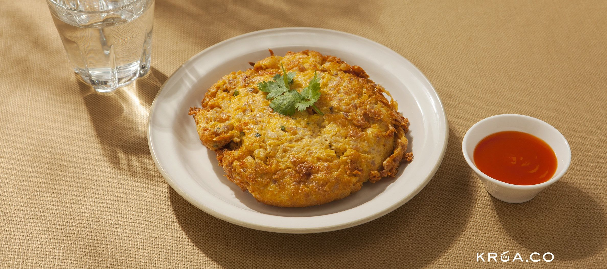

ไข่เจียวหมูสับ

ส่วนผสมในการทำ
- ไข่ไก่ 3 ฟอง
- เนื้อหมูสับ 150 กรัม
- หอมแดงซอย 1/4 ถ้วย
- น้ำปลา 1 ช้อนโต๊ะ
- น้ำ 3 ช้อนโต๊ะ
ส่วนผสมในการทำ
- ทำไข่เจียวหมูสับโดยต่อยไข่ลงในชามใส่หมูสับและหอมแดงซอย ปรุงรสด้วยน้ำปลาและน้ำ ตีส่วนผสมให้เข้ากัน จากนั้นพักไว้
- ตั้งกระทะน้ำมันบนไฟกลาง พอกระทะร้อนใส่ไข่ลงในกระทะทอดจนไข่ฟูเหลืองกรอบทั้งสองด้าน จากนั้นตักขึ้น พักไว้บนตะแกรงให้สะเด็ดน้ำมัน
- จัดไข่เจียวหมูสับใส่จาน ตกแต่งด้วยผักชี เสิร์ฟพร้อมซอสพริก